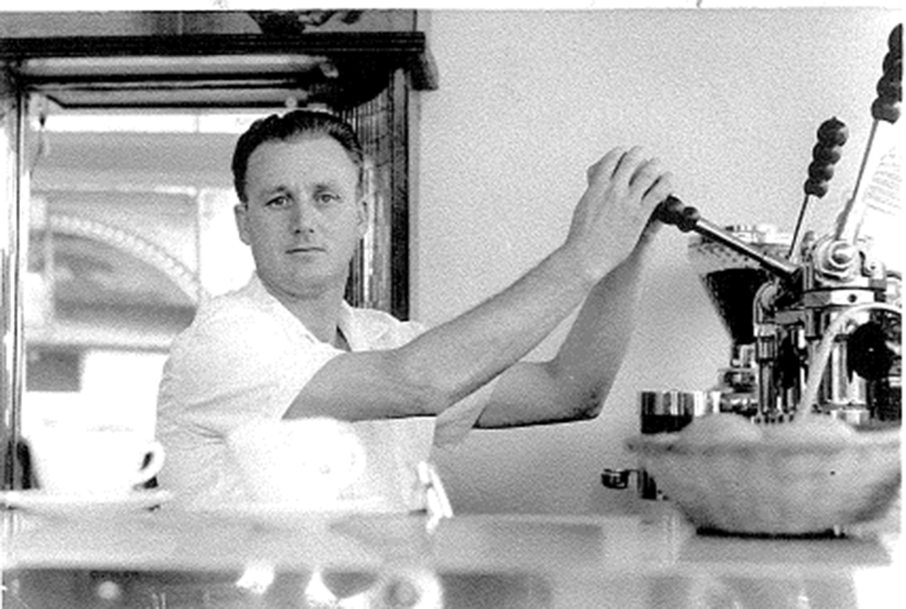

Brew each cup like it was brewed for you,” The famous words of Caffe Trieste’s founder, Giovanni Giotta, hang above a counter filled with traditional, homemade Italian pastries. Giovanni Giotta’s “old world” technique has secured the reputation as well as the distinction of being called “the Espresso Pioneer of the West Coast.”. In Rovigno and Trieste, Italy they still talk about the Giotta family’s success in America.
"Brew each cup like it’s for you." - Papa Gianni
Over a half a century ago, Giotta brought his family to America. They found a new world where hard work and prudent decisions still spelled success. Remembering his fondness for the coffee houses of Trieste, Mr. Giotta, decided to bring their charm and exquisite coffees to his new American home of San Francisco.
 The customers of Caffe Trieste enjoy the perfect Thursday afternoon atmopshere of the shop.
The customers of Caffe Trieste enjoy the perfect Thursday afternoon atmopshere of the shop.
Caffe Trieste became more than just a café for San Franciscans. Authors, filmmakers, and musicians of the beatnik social movement of the '50s, made Caffe Trieste their hideout.
Papa Gianni
Papa Gianni had much to be proud of. After Papa Gianni’s passing in the summer of 2016, his children, Fabio and Sonia have helped continue the family tradition of creating exquisite Italian espresso.
 Giovanni “Papa Gianni” Giotta (1920-2016)The right blend of love and tradition has resulted in a standard of quality previously unattained by many American cafés. This level of achievement echo’s the family’s mantra: “Brew each cup like it’s for you.”
Text by Nathan King.
Photographs by Olivia Bergmeier.
Web Development by Alex Masson.